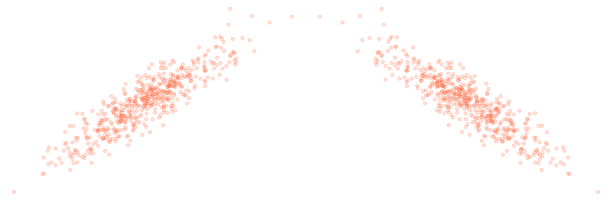

The foundation for understanding reliability from a statistical standpoint resides with Classical Test Theory. The title may be offputting at first blush, but it is conceptually straightforward. Even then, as McDonald @mcdonald_test_1999 put it-
The mathematics of the theory is extremely simple. The application of the theory can be problematic.
So what are the mathematics? Simple arithmetic.
\[\mathrm{Observed\ Score = True\ Score + Error}\]
But what does this mean? Any measurement we take of something provides us an observed score. For example, we step on a scale and note our weight. A perfect measurement would provide the right score every time, and thus our observed score would equal the true score. But no measurement is perfect1, i.e. everything is measured with some amount of error, however small. The error can be random, variability caused by unknown sources, but which will not affect our average account of a thing. Our weight from the scale goes up and down but on average it is correct. Error can also be systematic, where the measurement is always off by some amount, and our observed score is always too high or too low. In this scenario, our scale may always be displaying a greater weight than it should. Unfortunately, it is very difficult, if not impossible, to distinguish the two in many typical circumstances.
So conceptually we can simply think of an observation of any measure being composed of whatever the true score would be plus some associated error. The key idea is that the assessment of the error will allow us to understand how reliable our measure is.
Let’s start with correlation. If two things are correlated, they move in tandem, either they go up and down together, or as one goes up the other goes down and vice versa. At the very least of our understanding of reliability is that similar measurements of the same thing should be correlated. But this correlation might be assessed by different means.
x1 = rnorm(500)
y = .5*x1 + rnorm(500, sd=.25)
x2 = -x1
p1 = qplot(x1, y, size=I(1), color=I('#ff5500'), alpha=I(.15)) +
theme_trueMinimal() +
theme_void()
p2 = qplot(x2, y, size=I(1), color=I('#ff5500'), alpha=I(.15)) +
theme_trueMinimal() +
theme_void()
gridExtra::grid.arrange(p1, p2, nrow=1)
Let’s say we now take the weights of one hundred people. Then we do so again six months later. We should expect that heavier people at the first measurement will likely be heavier the second time as well. Same for lighter people.
That correlation of the two measurments can provide us our first attempt at measuring reliability. Typically referred to as test-retest reliability, this notion gives us some understanding of the stability or consistency of measurement across time. While this is useful and straightforward, many situations will not allow for multiple testing occasions, so we’ll need other alternatives.
One method instructors used to use to thwart cheating was to provide half of the class one version of the test, and the other half a different version, that covered the same content, but which had slightly different questions/answers. When passed out randomly, students couldn’t peek at their neighbor’s test and gain any advantage. In terms of classical test theory, if we gave these parallel/alternate forms to each student, the true score for any student would be the same, regardless of what form they took, and any observed score differences would be error.
In the more common applied research setting, the question then is how do we know if we are dealing with parallel tests? Unless they are derived as such, we cannot say for certain, and this usually only happens in educational settings, such as with the SAT or GRE. Beyond that it is probably rare that resources allow for parallel forms of measurement, or if they do, enough forms to test the assumption of parallelism.
A notion of reliability not too far removed from the previous is that of split-half reliability. If our measure is made up of multiple observations, say, survey questions, scale items, or whatever, we can just take a random half of them, get a total score for each individual, and do the same with the other half. Now each person has two scores, and their correlation gives us a glimpse of the reliability of the measure. Consider it a poor man’s alternate forms approach.
Split-half reliability allows us to estimate reliability with only one test. This is important, as many times we can only measure something in one setting, even if multiple times within that setting. For example, there may be only one qualifying exam, one survey administered, and so forth. As such we need some way to assess the internal structure of the measure. Some of the most commonly used statistics, such as coefficient \(\alpha\), offer such a measure. For that, it will still be based on simple correlations, but as we don’t have multiple tests, the correlations will regard the items or instances of the measure we have from the setting observations occur. The average correlation across all items will serve as the basis for an assessment of reliability, but the number of items will have a say as well.
htmltools::tags$div(style="width:50%; margin:0 auto; font-family:Roboto; font-size:50%",
DiagrammeR::grViz('code/graphical_models/construct_base.gv', width='100%', height='250px')
)Finally, we can think about reliability in terms of how well the tests measure the construct. Some would call this validity, though the distinction is muddier in practice. The observed measurements we have are imperfect measurements of the thing they are purported to measure. Estimation of that imperfection is the whole of reliability analysis. We can get at this notion more intently with tools from factor analysis, and can begin to think about reliability in terms of how much of the latent constuct is actually in the observed measures.
We can summarize all of the previous by returning to the classical test theory notion of reliability. In general, the reliability of a measure \(\rho\) is the proportion of true score variance to the total observed variance.
\[\rho = \frac{\sigma^2_T}{\sigma^2_T + \sigma^2_e}\]
Despite the overconfidence shown in some disciplines of their measures. Unfortunately, ignoring it doesn’t mean it disappears.↩